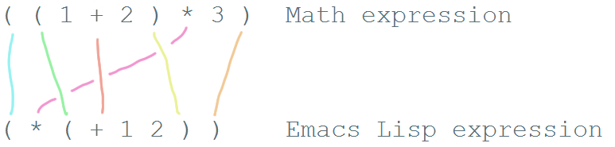

Read Lisp, Tweak Emacs: How to read Emacs Lisp so that you can customize Emacs "How can I try Emacs Lisp code?"
Table of Contents
- Introduction
- The wonderful world of Emacs customization
- "Where can I find useful Emacs Lisp code examples?"
- "How can I try Emacs Lisp code?"
- "How can I understand what Emacs Lisp code does?"
- Adding more features to Emacs
- "Oh no! I have an error!"
- Want to learn more about Emacs Lisp?
- Author's notes
Introduction
Hi! This is a guide to help you pick up the basics of reading
customization code for Emacs - little snippets of Emacs Lisp that you
can add to your ~/.emacs.d/init.el to change how Emacs works. I hope
this will help you learn how to borrow interesting snippets from
README files and other people's configs so that you can tweak Emacs to
fit the way you work. This is not a detailed guide on how to
understand Emacs internals, but by the time you find yourself digging
through comint.el to figure out what's going on with command
interpretation, you probably already know your way around.
We'll assume that you already have Emacs installed and that you've
gone through the built-in tutorial (Help - Emacs Tutorial, <f1> t,
C-h t, or M-x help-with-tutorial). I'll also assume you have a
little programming background or can deal with the concepts of
variables and functions. Feel free to ask questions if you get stuck
on something or if you want to clarify your understanding.
Please e-mail questions, comments, and suggestions to sacha@sachachua.com. I want to make this guide better, and I'd love to hear from you. If you would like to help improve this guide, you can find it on Github - pull requests welcome. This guide is dual-licensed under the Creative Commons Attribution License and the GNU Free Documentation License, so feel free to read, share, and build on it.
You can find this guide on the Web at http://emacslife.com/how-to-read-emacs-lisp.html .
Some conventions we'll use:
- Inline code will be
green and monospacein the HTML version and generally surrounded byequal signsin Org Mode - Code samples will be monospace and in boxes in the HTML version, and enclosed in #+beginsrc … #+endsrc in plain text. Example:
(message "Hello world")
Now, on with the guide.
The wonderful world of Emacs customization
To make the most of Emacs, learn how to read and write Emacs Lisp. Most of Emacs is written in Emacs Lisp: the packages that add extra functionality, the configuration code to set different options. You can change large parts of how Emacs behaves even without restarting Emacs.
Remember: with great power comes lots of time debugging if you mess things up. This is a guide to help you avoid messing up, so you can build the confidence to learn more. It's worth it. Start with one-line in ten years (or three, or twenty, or next month - all up to you), you'll be able to tweak Emacs to do more things than other people might imagine a text editor can do.
This is what Emacs Lisp code looks like:
(message "Hello world!")
Or something slightly more useful:
(setq delete-old-versions -1)
If you want to start playing around with Emacs Lisp code right away, jump ahead to the section on "How can I try Emacs Lisp code?".
"Why do I have to learn Emacs Lisp in order to get Emacs to do what I want? Shouldn't Emacs just come with reasonable defaults?"
Reasonable defaults make sense for specific people. Other people might have completely different ideas for how they want a tool to work. Many people use Emacs and have (occasionally quite strong) opinions about how they want it to work. It's difficult to change the defaults for everyone1, and since Emacs is so customizable, people tend to just fix things for themselves. If you learn how to read and write Emacs Lisp, you can pick up tips from other people's configurations and ask people for help.
There are some initiatives to put together common settings or "starter kits" that people may like. You can check them out for inspiration or use them as a starting point. Here are a few popular ones:
You can read them to pick up ideas for customizing Emacs, or you can use them as a starting point for your own configuration. Note that starter kits change the behaviour of Emacs from what you might expect based on manuals and webpages. If you've added configuration code that you don't understand, be sure to mention it when asking for help, since people might otherwise assume you're starting with the defaults. It may be a good idea to look at starter kits and other people's configuration for inspiration, but add snippets slowly instead of copying things wholesale.
"If I customize my Emacs, I'll have a hard time working with other people or on other computers."
I find that optimizing my Emacs configuration for my happiness is
worth the mild annoyance of not having my shortcuts handy (or worse,
not having Emacs!) when I pair-program with other people. If you're
pair-programming with other people, you can switch your configuration
or use a different editor. emacs -q starts Emacs without your
personal configuration. It's good to be familiar with other editors
like Vi so that you can be productive even if that's all you have, and
then learn how to make the most of Emacs so that you can reap the
benefits over the decades.
Many people synchronize their configuration across multiple computers by using version control systems like Git or file synchronization tools like Dropbox. You can set up Emacs to check for hostname or other system variables before loading system-specific configuration.
You might think it's not worth customizing Emacs if you spend most of your time ssh-ed into other servers. With Emacs, you can use TRAMP to edit files through SSH and sudo in your local Emacs.
"I don't have the time to fiddle around with this."
Emacs Lisp code can help you save time by automating repetitive actions, smoothening rough edges, or enabling time-saving features like autocompletion. Investing some time can help you save a lot of time later. Learning from other Emacs users can help you figure out customizations that take little time for big results.
That said, it's a good idea to take a step back and figure out if what you're trying to customize is really worth it. One of the occupational hazards of using Emacs is that tweaking your Emacs configuration can be fun, almost addictive. If you catch yourself spending four hours fiddling with something minor, it might be time to put that aside and focus on getting stuff done first.2
"Where can I find useful Emacs Lisp code examples?"
Do you already have some Emacs Lisp code that you want to understand? Jump ahead to the section on "How can I understand what Emacs Lisp code does?". It's easier to learn how to read Emacs Lisp when you start with simple examples that will help you use Emacs more effectively. Here are some useful sources:
Emacs documentation
Manuals and FAQs for Emacs-related tools often include code snippets. For example, the Emacs FAQ has an entry like this:
5.47 How can I tell Emacs to fill paragraphs with a single space after each period?
===================================================================================
Add the following line to your `.emacs' file:
(setq sentence-end-double-space nil)
You can read the Emacs manual by typing F1 i (info) and choosing
the Emacs item. You can also find the Emacs Manual at
http://www.gnu.org/software/emacs/manual/emacs.html .
Packages
Emacs has lots of packages in different repositories, many of which
require a little extra code in order to be used to full effect. You
can use M-x package-list-packages to list the packages that Emacs
knows about by default. You will need an Internet connection for
that.
If you're new to Emacs, try getting used to Emacs without packages first. There's plenty of functionality already built in. When you come across a gap, chances are that someone has written a package to make Emacs behave the way you want it to. Since there are lots of packages that do similar things, you might want to look for recommendations or ask people which ones you should start with.
In addition to the default package repository, there are other community-supported repositories. See Installing packages if you would like to install a package from a different repository.
If you install a package, check out the README, description, documentation, or source code comments for interesting packages to find suggested code to add to your Emacs configuration.
Here are some packages that might be interesting:
- company: adds text completion
- yasnippet: snippets and templates
- undo-tree: visualize your undo/redo history
You will need to be connected to the Internet in order to view and
install packages. You can use M-x package-list-packages to show the
available packages and read the descriptions for the packages above.
Webpages, blog posts, and the Emacs Wiki
While searching for information related to Emacs, you'll probably come across lots of Emacs Lisp snippets. The EmacsWiki has lots of code, too. Since this is a community-maintained wiki, you may come across code that is out of date or that refers to packages that you don't have. I've included common errors in this guide to help you figure things out - see "Oh no! I have an error!"
Mailing lists, newsgroups, and Q&A sites
There are many places where you can ask for help with Emacs. gnu.emacs.help is available as a mailing list or as a newsgroup - check your favourite Usenet server or use Gmane. StackOverflow and Quora are popular as well. If you ask questions there, you might get answers in the form of Emacs Lisp code. You'll also come across Emacs Lisp code while searching for answers.
Find a snippet of Emacs Lisp code you want to understand more deeply, or look at the examples in the sections below.
"How can I try Emacs Lisp code?"
After this section, you should be able to
- try Emacs Lisp code before saving it to your configuration (that way, you don't have to keep restarting Emacs)
- add code to your configuration so that it runs whenever Emacs starts
It's easier to understand code if you can experiment with it. There are several ways you can try Emacs Lisp code before saving it in your configuration.
Note: As you experiment with Emacs Lisp, you might run into errors. Check out "Oh no! I have an error!" (http://emacslife.com/how-to-read-emacs-lisp.html#errors) for some common errors and what to do about them.
Here are some ways you can run Emacs Lisp code. I'll explain them in more detail below.
M-x ielm(Inferior Emacs Lisp Mode)- The
*scratch*buffer and Emacs Lisp files M-:(eval-expression)C-x C-e(eval-last-sexp)
Some conventions we'll use:
- Inline code will be
green and monospacein the HTML version and generally surrounded byequal signsin Org Mode - Code samples will be monospace and in boxes in the HTML version, and enclosed in
#+begin_src…#+end_srcin plain text. Example:(message "Hello world")
M-x ielm (Inferior Emacs Lisp Mode)
The Inferior Emacs Lisp Mode gives you a prompt where you can type or paste in Emacs Lisp code. Start it with M-x ielm. Press RET after you enter code, and the results will be displayed. "Inferior" is a technical term referring to how it's run, not a comment on the simplicity of the tool or the code you want to try. You can go to previously-executed code, change things, and press RET to run (or "evaluate") it again.
If you're copying or typing code, make sure your parentheses are all matched - every "(" should have a ")". IELM won't run the code unless it sees the closing parenthesis. So the following code is incomplete:
(message "Hello
but this will work:
(message "Hello world")
Tip: When you're trying out an unfamiliar mode, use F1 m (describe-mode) to learn more about the commands that are available in that mode.
The *scratch* buffer and Emacs Lisp .el files
When Emacs starts, it creates a buffer called *scratch* with the following contents:
;; This buffer is for notes you don't want to save, and for Lisp evaluation. ;; If you want to create a file, visit that file with C-x C-f, ;; then enter the text in that file's own buffer.
You can add code to the end.
;; This buffer is for notes you don't want to save, and for Lisp evaluation. ;; If you want to create a file, visit that file with C-x C-f, ;; then enter the text in that file's own buffer. (message "Hello world")
Note: ; is the comment character. Anything after the comment character is considered part of the comment. Make sure you add your code on a new line, not in the comment.
To run code ("evaluate" it, in Emacs terms), you can use the following commands based on what you want to run:
M-x eval-bufferruns all the code in the current file or buffer.M-x eval-regionruns the selected code. You can select code by using the mouse or by typingC-SPCto mark the start of the region and moving to the next.C-x C-e(eval-last-sexp) runs the expression (S-expression, or sexp) before the cursor. NOTE: Your cursor should be after the closing parenthesis, not on it.
In the *scratch* buffer, you can also press C-j (eval-print-last-sexp) after an expression in order to evaluate it and display the results in the buffer.
The *scratch* buffer is not automatically saved. If you would like to save your code for future use, you can create a file with an .el ending. el stands for Emacs Lisp, and Emacs will open these files in Emacs Lisp mode. The commands listed above work in Emacs Lisp files.
M-: (eval-expression)
If you want to quickly try an expression, you can use M-: (eval-expression). To see any results it displayed, you can switch to the *Messages* buffer.
C-x C-e (eval-last-sexp)
C-x C-e (eval-last-sexp) runs the expression (S-expression, or sexp) before the cursor. NOTE: Your cursor should be after the closing parenthesis, not on it. C-x C-e (eval-last-sexp) works in lots of buffers, not just in Emacs Lisp ones. You can use it to quickly try expressions while reading manual pages or other documentation.
If you want that code to run every time you start Emacs…
… then add it to your ~/.emacs.d/init.el file. You can generally add new code at the end. If the code has something to do with add-to-list and load-path, it might be good to add it to the beginning instead.
Note: The Emacs configuration file used to be ~/.emacs, and most webpages refer to that. ~/.emacs still works - in fact, if you have that, it may stop Emacs from loading ~/.emacs.d/init.el. On the other hand, if you use ~/.emacs.d/init.el (and move your ~/.emacs code to that file instead), then you have one less hidden file in your home directory (~). If you're adding code to your config and it's not getting loaded, make sure you have either ~/.emacs or ~/.emacs.d/init.el, but not both.
When you're starting out, it's a good idea to keep your configuration in one file. Later on, you can split it up into multiple files if you want.
Practice
Try this out:
- Use
M-x ielmto evaluate this expression interactively:system-type
- Use
M-:(eval-expression) buffer to evaluate the following expression:(* 21 2)
M-:is handy for quick calculations. In fact, you can use it withC-u(that is,C-u M-:) to insert the result into the buffer. Try it now:C-u M-: (* 21 2) - Add
(message "Hello, world!")to the end of your~/.emacs.d/init.el. UseM-x eval-bufferto load your config. It should display the message. If you restart Emacs, you should also see that message.
"How can I understand what Emacs Lisp code does?"
The function name is after the opening parenthesis
In math, operators like + and * go between the numbers they will work on. In Emacs Lisp, the operator (or the "function") is at the start of the expression, followed by the things it's going to operate on ("arguments").
Here's how to calculate (1 + 2) * 3 in Emacs Lisp. Note that the multiplication is surrounded by parentheses, even if we usually leave out the parentheses in math. That's because in Emacs Lisp, all function calls have their own set of parentheses.
(* (+ 1 2) 3)
Let's take a closer look:
( ( 1 + 2 ) * 3 ) Math expression ( * ( + 1 2 ) 3 ) Emacs Lisp expression

See how the operators are at the beginning of whatever they're working on, and the parentheses enclose everything that's related to that operator?
Understanding this will let you read code like:
(global-hl-line-mode)
This calls the global-hl-line-mode function, which highlights the
current line.
(show-paren-mode)
This calls the show-paren-mode function, which shows matching
parentheses when your cursor is after them.
(blink-cursor-mode -1)
This calls the blink-cursor-mode function with -1 as the argument,
which turns blinking cursors off.
(find-file "~/todo.org")
This calls the find-file function with todo.org file in your home
directory. It opens the file, creating it if it doesn't exist yet.
(turn-on-eldoc-mode)
This turns on eldoc-mode, which displays the argument list for the
current function. You can move your point around to see documentation
for other functions.
(setq visible-bell t)
This turns off beeping. Instead, when Emacs runs into an error, it will flash the title bar or screen.
(setq column-number-mode t)
This turns on the display of the column number in the modeline.
(add-hook 'emacs-lisp-mode-hook 'turn-on-eldoc-mode)
This turns on eldoc-mode when a buffer is switched to Emacs Lisp
mode. You'll learn more about why some things have ' and some don't in
the section on When something is quoted, it's taken literally.
"How can I learn more about functions?"
The symbol after ( is usually a function name, unless it's part of a
list. You'll learn how to recognize lists later.
To find out if something is a function, what it does, what arguments
it takes, and if it has any keyboard shortcuts, use the <f1> f
(describe-function) command. Give it the function name. For example,
<f1> f add-hook will show you the documentation for add-hook, and
<f1> f show-paren-mode will show you the documentation for that.
The documentation for show-paren-mode starts with "show-paren-mode
is an interactive autoloaded Lisp function". Interactive functions can
be called with M-x. Read the description of the function to learn
more about arguments that you can pass to change its behavior. If it
mentions a prefix argument, that means that you can change its
behaviour by typing C-u before you call the function.
Exercise:
Use <f1> f (describe-function) to learn more about the following functions:
describe-function |
Yes, this is also a function! The documentation will give you alternative keyboard shortcuts such as C-h f. |
find-file |
You can use this to open specific files. See the function description to learn how to use this with remote files. |
"How can I learn more about variables?"
Variables are containers that can hold different values. In Emacs Lisp, you can change the value of a variable as many times as you want, and you can change it to different types of data as needed.
Like the way you can use <f1> f (describe-function) to learn more
about a function, you can use <f1> v (describe-variable) to learn
more about a variable by name. For example, use <f1> v to look up
visible-bell.
To make it easier for you to customize Emacs without writing Emacs
Lisp code, many variables give you an interface for setting the
variable. If you use describe-variable to look up the definition,
you'll often see a line like "You can customize this variable."
Click on the customize link in the documentation or move your point
to it and press RET. You can change the value there and try it
temporarily, or you can save it to your configuration. The Customize
interface is good for exploring, but because the code that it
generates can difficult to read or share, many people skip it and use
Emacs Lisp code instead.
Some things are taken literally
One of the examples from the section on functions was this:
(add-hook 'emacs-lisp-mode-hook 'turn-on-eldoc-mode)
add-hook is a function. 'emacs-lisp-mode-hook and 'turn-on-eldoc-mode are symbols. emacs-lisp-mode-hook is a variable that contains a list of functions to run, and turn-on-eldoc-mode is a function that we're adding to that list.
The single quote means take it literally - treat it as the name of something. If you remove the quote from emacs-lisp-mode-hook, Emacs will look up the value in that variable and use that as the name of the variable to actually set, and you'll probably get an error.
Here's another example:
(fset 'yes-or-no-p 'y-or-n-p)
This calls the fset function, which sets the function definition of yes-or-no-p to the function y-or-n-p. In short, it changes the "yes" or "no" prompts to "y" or "n", which can be convenient.
Not everything is quoted. You'll often see lines like this in Emacs configuration files:
(setq delete-old-versions -1)
setq stands for "set quoted". This is actually the same code as (set 'delete-old-versions -1) or (set (quote delete-old-versions) -1), but
setq is shorter, so it's more common.
This can be confusing. When you're starting out, copy code carefully. If there's a single quote, make sure there's a single quote in your copy. If there isn't, skip it.
Lists and lists and lists of lists
You can set the value of a variable to multiple things. In Emacs configuration files, you'll often see ' used for lists. For example,
(setq diff-switches '("-b" "-u"))
sets the options for the diff command to a list containing two items, -b and -u. Quoting the list creates a list and quotes all the content in it as needed. You can create lists with the list function instead. The code above is the same as:
(setq diff-switches (list "-b" "-u"))
The code above sets the value of the variable to a list, ignoring any previous values it had.
Most of the time, though, you want to add to a list instead of completely replacing it. You'll often see something like this in people's configuration files:
(add-to-list 'load-path "~/elisp")
This adds the ~/elisp directory to the beginning of the list of directories that Emacs checks when loading libraries. If the directory is already in the list, add-to-list does nothing.
Some lists use the dot notation. This depends on what's expected by the function that uses the list. For example:
(add-to-list 'package-archives '("melpa" . "http://melpa.milkbox.net/packages/"))
This calls the add-to-list function with two arguments. The first argument ('package-archives) specifies the list to add an item to, and the second argument ('("melpa" . "http://melpa.milkbox.net/packages/")) is the data to add. The dot notation (a . b) shows that this is a cons cell, which always has two parts: the car and the cdr. To understand the difference between cons cells and other lists, you need to know how lists are constructed.
A cons cell looks like this:
car cdr
+----------------+----------------+
| | |
| a | b |
| | |
+----------------+----------------+
A list like '("-b" "-u") is made up of several cons cells.
car cdr car cdr
+----------------+----------------+ +----------------+----------------+
| | | | | |
| -b | ------------------>| -u | |
| | | | | |
+----------------+----------------+ +----------------+----------------+
In Emacs Lisp, '("-b" "-u") is equivalent to (cons "-b" (cons "-u" nil)), and it's not the same as (cons "-b" "-u"). That's why you have to be careful about whether something uses dots or not. A good way to find out is by reading other people's configuration and seeing how they use that variable.
Because lists are made up of cons cells, you'll sometimes see people add to lists like this:
(setq load-path (cons "~/elisp" load-path))
This adds ~/elisp to the beginning of the load-path list. It does this by using cons to create a new cons cell that has ~/elisp at the beginning and a pointer to the rest of the values in load-path, and then storing that in load-path.
Lists can also contain lists. For example, here's some code that saves backup files (the ones that end in ~) to ~/.emacs.d/backups.
(setq backup-directory-alist '(("." . "~/.emacs.d/backups")))
This is how the second argument breaks down:
( ;; a list with one item
("." . "~/.emacs.d/backups") ;; a cons cell with a car of "." and a cdr of "~/.emacs.d/backups"
)
If you want to learn more about cons cells, see the Emacs Lisp Reference.
Advanced: Backquotes or backticks (`) are special. They quote the expression that follows them, but they also allow you to substitute values or evaluate expressions. Backquotes are useful for more complex structures or when you're working with macros. They do basically the same thing as ' for lists, but anything preceded by a comma (,) is evaluated. They're less common, but if you do come across them, note that ` is not the same as '. See the Emacs Lisp Reference for more information.
Keyboard shortcuts
The default keyboard shortcuts (or "keybindings") can be difficult to remember, and many useful functions don't have any keyboard shortcuts at all. People often reassign keys to other functions in their configuration files. There are different ways to assign keys depending on where you want the keybinding to be available.
Setting keybindings in all buffers
You can assign a key to a function globally, which means that it will be available if there are no mode maps or local keybindings that override it. Mode maps are set by major modes like emacs-lisp-mode or minor modes like auto-fill-mode. This is usually done with global-set-key, although sometimes you'll see it done with define-key and global-map.
Here are some examples.
(global-set-key (kbd "RET") 'newline-and-indent)
This redefines the Return key (or the Enter key) so that it calls the newline-and-indent function by default.
(global-set-key (kbd "C-+") 'text-scale-increase) (global-set-key (kbd "C--") 'text-scale-decrease)
These set C-+ (Ctrl and <plus>) and C-- (Ctrl and <minus>) to increase and decrease the font size.
If you want to set a keyboard shortcut only in particular modes or types of files, jump ahead to Setting keybindings in a particular mode.
What does kbd do? How can I figure out which key it sets?
If you've gone through the Emacs Tutorial (Help - Emacs Tutorial or F1 t), you'll be familiar with many of the conventions used for writing keyboard shortcuts. C- stands for the Ctrl key, M- stands for the Meta key (which is probably Alt or Option on your keyboard). There are other prefixes as well. S- is for Shift, H- is for Hyper, and s- is for Super. Some people use operating system tools (such as setxkbmap for Linux) to change keys on their keyboard to Super or Hyper in order to enable even more keyboard shortcuts.
Uppercase or lowercase depends on the character in the shortcut. C-x means Control + x, while C-X is actually Control + Shift + X. You can also specify shift by adding S-, so C-X and C-S-x are the same.
In addition, there are some special characters: RET, SPC, TAB, and ESC must be written in uppercase to mean the special keys they refer to. (There's also LFD and NUL, but you're probably not going to encounter those as often.) You can use angle brackets to refer to some other keys, like <return>, <up>, <down>, <left>, <right>. Function keys are written like this: <f1>.
There are different ways to specify the key. Many people use (kbd ...) because it makes bindings easy to read.
(global-set-key (kbd "M-/") 'hippie-expand)
This is the same as
(global-set-key "\M-/" 'hippie-expand)
or
(global-set-key [?\M-/] 'hippie-expand)
You can use ^ to mean Control, so
(global-set-key (kbd "C-s") 'isearch-forward-regexp)
is the same as
(global-set-key (kbd "^s") 'isearch-forward-regexp)
but C- is probably easier to read.
When using kbd, whitespace doesn't usually matter, but it's easier to read if you use space to separate the keys to type. For more information about the syntax used by kbd, see F1 f (describe-function) for kbd, then follow the link to the documentation for edmacro-mode.
Multi-key shortcuts
You can set up keybindings that use more than one key combination. This is a popular technique since you can only have so many short keybindings. For example, the following code changes C-x C-b to call ibuffer.
(global-set-key (kbd "C-x C-b") 'ibuffer)
You don't have to start with C-c or C-x. Consider using one of your function keys like <f9> as the start of your keyboard shortcuts. Then you can create shortcuts that don't involve using Ctrl, Alt, or other modifier keys.
(global-set-key (kbd "<f9> b") 'ibuffer)
"Key sequence __ starts with non-prefix key _"
If you want to create a multi-key shortcut, the preceding keys must not be assigned to functions. That is, if you want M-t l to call transpose-lines, you'll need to get rid of M-t's default binding to transpose-words first. To unset a key, bind it to nil. Here's an example that also includes a few handy shortcuts:
(global-set-key (kbd "M-t") nil) ;; Remove the old keybinding (global-set-key (kbd "M-t l") 'transpose-lines) (global-set-key (kbd "M-t w") 'transpose-words) (global-set-key (kbd "M-t t") 'transpose-words) (global-set-key (kbd "M-t M-t") 'transpose-words) (global-set-key (kbd "M-t s") 'transpose-sexps)
The example above has three bindings for transpose-words. M-t w uses the mnemonic of *t*ranspose *w*ords. M-t t is similar to the original binding for transpose-words, which was M-t. M-t M-t just makes it a little easier. This may seem like overkill, but sometimes you'll find it easier to hold the Meta key down and hit t twice quickly instead of typing M-t, releasing Meta, and then typing t. As you read other people's keybindings, you'll get a sense of how people have configured their keyboard shortcuts to speed up typing and minimize thinking.
Setting keybindings in a particular mode
Sometimes you want keys to do different things in different types of
files. Modes are how Emacs changes behaviour based on context. For
example, Java files use java-mode, Org files use org-mode, and so
forth. Each mode has a keybinding map (or a "keymap"). You can assign
a key in a mode map, which means it will override global keybindings
in buffers with that mode. You can do this with define-key if you
know the name of the keymap you want to change, which is generally the
name of the mode + -map. For example:
(define-key c-mode-map (kbd "C-c o") 'ff-find-other-file)
changes the C-c o keyboard shortcut to ff-find-other-file, but only in C buffers.
Note that if you use define-key with a mode map, the mode must already be loaded by the time this code is run. That's why you'll often see this after a require (which loads the code) or inside an eval-after-load (which postpones the code until after the mode is loaded). See Adding more features to Emacs for more information.
Other ways people bind keys
The bind-key package provides a function that makes it easier to see your personal keybindings, but bind-key is not part of Emacs by default. I use bind-key a lot in my configuration. The syntax is similar to global-set-key, except it automatically wraps the keyboard shortcut string in kbd. It also keeps track of which keyboard shortcuts you've overridden so that you can use M-x describe-personal-keybindings to review them.
(bind-key "C-+" 'text-scale-increase) (bind-key "C--" 'text-scale-decrease)
You'll need to install and use the bind-key package before you can use that code.
Because keybinding is something that lots of people do to customize their Emacs, you may find other ways that people have simplified writing keybindings for themselves. When in doubt, use F1 f (describe-function) to explore how something works. If the function can't be found, see if it's in a package somewhere, or search the Web for more information.
Defuns - function definitions
In addition to the functions built into Emacs or available in
packages, many people define their own with the defun function.
People often distinguish custom functions by starting them with my/
or their initials. This makes it easier to tell which functions
they've customized and which ones are part of a package. You can
change the name of a function as long as you make sure you change the
name wherever it's called, such as in keyboard shortcuts, hooks, or
other functions.
For example, here's a custom function from Jorgan Schaefer's config:
(defun fc/kill-to-beginning-of-line () "Kill from the beginning of the line to point." (interactive) (kill-region (point-at-bol) (point)))
This creates a function called fc/kill-to-beginning-of-line. () is
the argument list. Since it doesn't contain anything, that means this
function does not take arguments. "Kill from the beginning of the
line to point." is a documentation string (or docstring) that
describes what the function does. Docstrings are optional, but highly
recommended. (interactive) means that this can be called with M-x (execute-extended-command)
or bound to a keyboard shortcut.
If a function does not have the (interactive) keyword, you won't be
able to call it with M-x or assign it to a keyboard shortcut, but
you will still be able to write Emacs Lisp code that calls the
function. This means M-x (execute-extended-command) lists only the
commands that people will probably find useful while working directly
with Emacs, skipping internal functions used by code.
Once you've defined a custom function, you can bind it to a keyboard
shortcut if you want. The code below binds the
fc/kill-to-beginning-of-line function to C-c C-u:
(global-set-key (kbd "C-c C-u") 'fc/kill-to-beginning-of-line)
Lambdas - anonymous functions
Sometimes people just want to create a keyboard binding or process
some data without defining a new function. lambda creates an
anonymous function. Here's an example:
(global-set-key (kbd "C-c E") (lambda () (interactive) (find-file "~/.emacs.d/init.el")))
This binds C-c E to an anonymous function. The () means it doesn't
take any arguments. (interactive) means it can be called through a
keyboard shortcut, although since it's anonymous, it can't be called
with M-x. The function opens the ~/.emacs.d/init.el file, which is
a handy way to edit your configuration.
Adding more features to Emacs
Most Emacs libraries are not loaded automatically. This saves memory
and keeps things simpler. You can load built-in code by using
require, like this:
(require 'hl-line)
This loads the hl-line library. require looks for a file named
after the name provided to it, loads it, and double-checks that the
library includes (provide 'feature-name-goes-here). It throws an
error if the library is not found or if it doesn't provide that
symbol.
Installing packages
Emacs comes with a lot of code, but there are even more packages out there. When you read other people's Emacs configurations, you might come across other interesting packages to try out.
Sometimes people don't indicate which packages they use, so you have
to guess the package name based on the function. For example,
(global-auto-complete-mode) turns on a completion mode called
auto-complete-mode in all buffers. Before you can use this, you will
need to install the auto-complete buffer. In general, you can find
package names by looking at functions that include mode in their
name, removing global, turn-on, and other prefixes as needed.
The default package repository in Emacs 24 has a limited number of packages. For more choices, you may want to add another repository such as MELPA or Marmalade Here's the code that you would run in order to add these repositories to your Emacs:
(require 'package) (add-to-list 'package-archives '("melpa" . "http://melpa.milkbox.net/packages/")) (add-to-list 'package-archives '("marmalade" . "http://marmalade-repo.org/packages/"))
If you're connected to the Internet, use M-x package-refresh-contents
to update the list of packages. Use M-x package-list-packages to list
the available packages. i marks the current package for installation,
and x actually performs the operations.
Installed packages aren't automatically loaded, although a lightweight
list of the functions they define is loaded after your init.el is
run. You can start that initialization earlier by adding
(package-initialize). If this still doesn't get your code to work,
use (require 'feature-name), where the feature name is usually the
name of the package. See Lisp error: (void-function …) or Symbol's
value as variable is void: _ for some more details.
Sometimes people want to install some packages on one computer but not
on another. Here's example code that runs some configuration if the
helm package can be loaded, but silently continues if the package
has not been installed.
(when (require 'helm-config nil t) (setq helm-quick-update t) (helm-mode))
If you use F1 f (describe-function) on require, you'll see that
it has one required argument (feature) and two optional arguments
(filename, noerror). require returns non-nil (or true) if the
library was loaded, so if the library exists, then the rest of the
code inside the when expression gets called.
Along those lines, you may come across code that looks like this:
(eval-after-load "dash" '(dash-enable-font-lock))
This runs (dash-enable-font-lock) only after dash is loaded. It
does not automatically load dash. You'll see this when people have
configuration that they want to run only if something is loaded, which
can make sense for performance reasons.
Other Emacs Lisp files
Some files are not yet available as packages. If you search for the
function, you'll probably find a webpage with an .el file. You can
save those to your computer and load them with:
(load "/path/to/file.el")
You can also use the require syntax, but first you'll need to add your downloaded Emacs Lisp file to the load-path with something like this.
(add-to-list 'load-path "/path/to/dir/with/el/files")
Then you can use require to load the Emacs Lisp code if it exists. See Adding more features to Emacs for details.
(require 'feature-name)
"Oh no! I have an error!"
Part of learning a new language is learning how to recognize and deal with different errors.
If you've already added the code to your ~/.emacs.d/init.el, you can
start Emacs with emacs --debug-init to display debugging messages,
or you can start Emacs with emacs -q to skip your personal
configuration. Before reporting a bug with Emacs or with a package,
use emacs -q (or emacs -Q, which skips site-wide configuration as
well) to see if it works as intended without your personal
configuration.
You can narrow down the source of the problem by progressively
commenting out more and more of the code. Make sure you comment out
balanced sets of parentheses. To comment a region, select it and use
M-x comment-region. You can use M-x uncomment-region to uncomment
it. M-x comment-dwim (do what I mean) guesses whether you want to
comment or uncomment something, and has the handy keyboard shortcut
M-;.
Here are some common error messages and how you can try fixing them. If you don't see the error you're struggling with here, please e-mail me the code and the error you're running into: sacha@sachachua.com . Happy to help!
Scan error: "Unbalanced parentheses" or "Containing expression ends prematurely"
You may have pasted in something that has a "(" but no matching ")", which results in unbalanced parentheses. Alternatively, you may have pasted in something that has ")" but no "(", which results in a premature end. Try reading the code carefully in order to find the mismatched pair. You can also use C-M-f (forward-sexp) and C-M-b (backward-sexp) to navigate by complete expressions until you find the specific one that causes the error.
Cannot open load file: …
The code is trying to require or load a file that Emacs can't find.
- Have you installed the appropriate package? Use
M-x list-packagesto see if it has been packaged into a form that's easy to install. You may need to add other sources to yourpackage-archivesto see a wider range of packages. - Have you downloaded it manually and added it to your
load-path? See Load path for more details. - If you're using
load, does the file exist?
See Loading libraries for more information.
Lisp error: (void-function …)
The code calls a function that has not been defined.
- Have you installed the appropriate package? Look at the function name and try to guess the name of the package. People usually start the function name with the package name in order to make the function names unique. Use
M-x list-packagesto see the available packages. You may need to add other sources to yourpackage-archivesto see a wider range of packages. See Adding more features to Emacs. - If you downloaded the library manually,
loadorrequireit. See Downloading Emacs Lisp files. - If you're copying some code that isn't packaged in a library, check if there are any
defun(define function) expressions that you forgot to copy. Make sure to include and evaluate those.
Symbol's value as variable is void: _
The code is trying to get the value of a variable that has not yet been set. See if there's other code that you need to evaluate first in order to set up those variables. If the expression involves add-to-list or add-hook, you may need to use require to load the library that defines that list or hook first (see Adding more features to Emacs).
You might also get this if you're using C-x C-e (eval-last-sexp)
to evaluate an expression that's inside let or other things that
create variables. When you're starting out, make sure you use C-x
C-e (eval-last-sexp) after the outermost set of parentheses.
I'm using C-x C-e (eval-last-sexp) and I don't get the results I expected
Make sure you call C-x C-e after the outermost ) for the expression you want to evaluate.
(ido-mode 1)
^
|
+---- Your cursor should be here
If the code you're looking at has multiple expressions, you'll need to call C-x C-e after each of them.
It might be easier to select the region and use M-x eval-region, or load the entire buffer with M-x eval-buffer. Alternatively, use M-x ielm to evaluate the code instead.
Want to learn more about Emacs Lisp?
Check out An Introduction to Programming in Emacs Lisp, and delve into the Emacs Lisp Reference Manual for more details.
If you liked this, please let me know at sacha@sachachua.com! I'd love to hear from you, and I'm happy to help with other Emacs questions you may have. I'm working on a guide to customizing your Emacs with Emacs Lisp, which goes into a little more detail than this. It also lists several other resources for learning Emacs Lisp. Good luck and have fun!
More links:
- http://bzg.fr/learn-emacs-lisp-in-15-minutes.html
- http://harryrschwartz.com/2014/04/08/an-introduction-to-emacs-lisp.html
- http://toumorokoshi.github.io/emacs-from-scratch-part-3-extending-emacs-with-elisp.html
- An Introduction to Programming in Emacs Lisp: A bit abstract, but a good place to start. Read it even if you don't understand everything. Read it again. Refer to it frequently. Graduate to the Emacs Lisp reference manual when you're more comfortable (or if you need to look up details).
- http://ergoemacs.org/emacs/elisp.html: Good collection of idioms and common uses.
- http://joelmccracken.github.io/entries/emacs-lisp-for-hackers-part-1-lisp-essentials/: Starts with ielm, focuses on data structures; other parts?
- http://cjohansen.no/an-introduction-to-elisp: Focuses on Emacs Lisp as a way of extending Emacs, uses programming examples (test cases)
- http://steve-yegge.blogspot.com/2008/01/emergency-elisp.html
Author's notes
I've posted the source for this document on Github (http://github.com/sachac/emacs-notes). This guide is dual-licensed under the Creative Commons Attribution License and the GNU Free Documentation License, so feel free to read, share, and build on it. Patches and pull requests welcome!
- Resources
- This document: beginner-level
- For people who already have a programming background but who are new to Emacs Lisp (guide for complete beginners later)
- Want to customize Emacs, but not entirely sure about what they're adding
- Sample confusion: (add-to-list 'load-path …) vs (add-to-list 'load-path … t) - easily solved with C-h f add-to-list if you know how to read it
- Assumption: you've installed Emacs 24 and have gone through the tutorial (C-h t)
- Scope: learning how to read short snippets of code (ex: config), not learning how to read complex code (ex: comint)
- For people who already have a programming background but who are new to Emacs Lisp (guide for complete beginners later)
- Where can I find short Emacs Lisp code to learn from?
- README for packages
- EmacsWiki
- mailing lists
- Planet Emacsen
- Look for someone who uses Emacs like you
- How can I understand what Emacs Lisp code does?
- Ex: (global-hl-line-mode)
- How can I read a statement?
- Prefix - the "verb" goes at the beginning. This is actually like many programming languages, although Lisp does it consistently throughout. For ex
- How can I copy Emacs Lisp code from other people's configuration?
- Try a little before you add things
- How can I try things a little at a time?
- ielm
- C-x C-e (eval-last-sexp) - works everywhere
*scratch*buffer or .el file- eval-buffer
- eval-region
- M-: (eval-expression)
- Sometimes you need to reopen a file in order to apply the changes
- What are some of the common errors I might run into?
- Evaluating at the wrong point
- Missing )
- Undefined function
- Undefined variable or hook
- Unexpected symbol
- Obsolete code
- Not a prefix key
- Okay, I like this. How can I make it part of my Emacs?
- .emacs.d/init.el (also note about ~/.emacs)
- Add comments
- Wait! I changed my mind!
- delete or comment out the lines
- ;
- if you can't use Emacs with your current config, emacs -q
- delete or comment out the lines
- Oh no, my init.el broke
- emacs –debug-init
- emacs -q
- Common types of customizations
- function calls
- setq
- require
- add-to-list
- add-hook
- cons
- keybindings
- global-set-key
- define-key
- defun
- let
- regular expressions
- eval-after-load
- Other notes on reading
- Whitespace
- How can I try changing things a little?
- How can I quickly navigate through code?
- forward-sexp and backward-sexp
- Emacs Lisp is great! I want to learn more
- Learn How to Customize Emacs with Emacs Lisp
- How can I go through code step by step?
- edebug-defun
- Thanks
- aidalgol, rryoumaa, shergill, taus, tali713, Fuco, @philandstuff, forcer, DaveP (detailed feedback, thanks!)
Footnotes:
Is it worth the time - http://xkcd.com/1205/